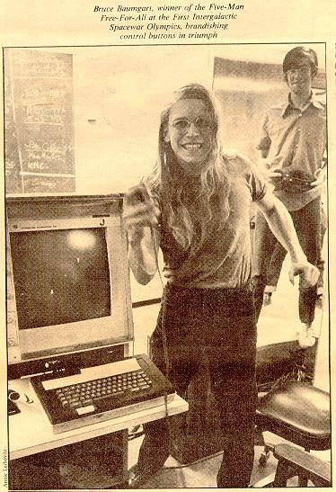
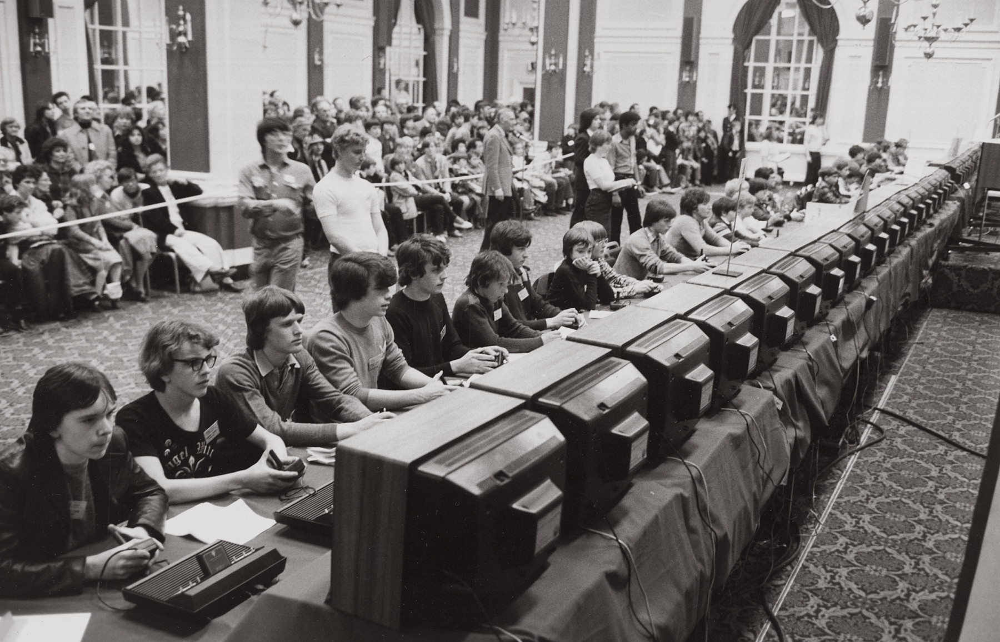

The History of E-Sports
When was the first tournament?
The earliest known video game competition took place on 19 October 1972 at Stanford University for the game Spacewar. Stanford students were invited to an "Intergalactic spacewar olympics" whose grand prize was a year's subscription for Rolling Stone, with Bruce Baumgart winning the five-man-free-for-all tournament and Tovar and Robert E. Maas winning the team competition.The Space Invaders Championship held by Atari in 1980 was the earliest large scale video game competition, attracting more than 10,000 participants across the United States, establishing competitive gaming as a mainstream hobby. In 1980, Walter Day founded a high score record-keeping organization called Twin Galaxies.The organization went on to help promote video games and publicize its records through publications such as the Guinness Book of World Records, and in 1983 it created the U.S. National Video Game Team. The team was involved in competitions, such as running the Video Game Masters Tournament for Guinness World Records and sponsoring the North American Video Game Challenge tournament.During the 1970s and 1980s, video game players and tournaments began being featured in well-circulated newspapers and popular magazines including Life and Time.One of the most well known classic arcade game players is Billy Mitchell, who was credited with the records for high scores in six games including Pac-Man and Donkey Kong in the 1985 issue of the Guinness Book of World Records.
Televised Esports competitions
Televised esports events aired during this period included the American show Starcade which ran from 1982–1984 airing a total of 133 episodes, on which contestants would attempt to beat each other's high scores on an arcade game.A video game tournament was included as part of TV show That's Incredible!,and tournaments were also featured as part of the plot of various films, including 1982's Tron.In the UK, the BBC game show First Class included competitive video game rounds featuring the contemporary arcade games, such as Hyper Sports, 720° and Paperboy.